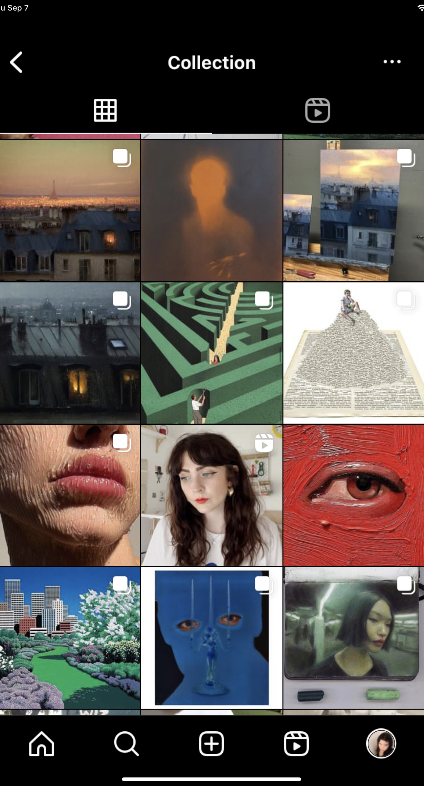
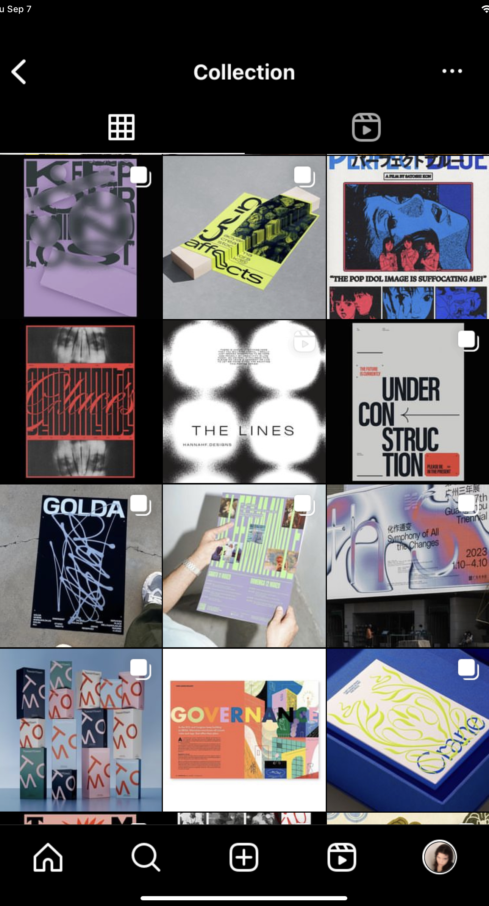
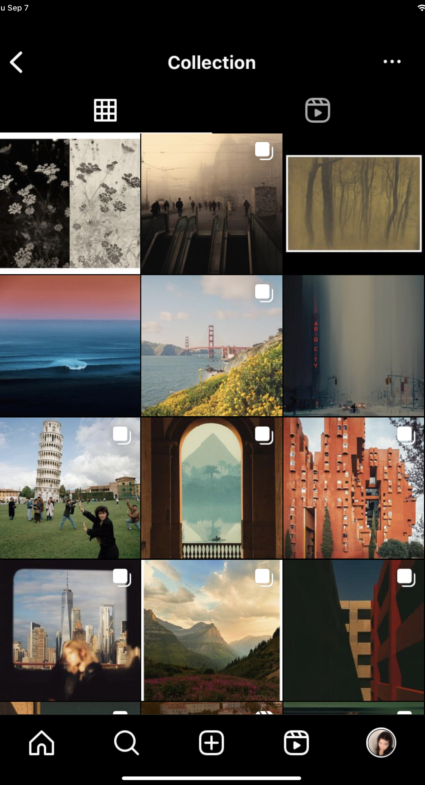
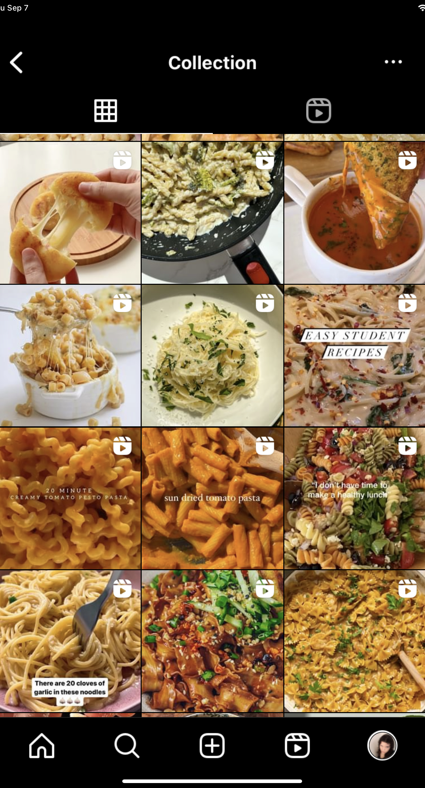

photography
This board that Zanett created was inspired by beautiful visuals, aptly named "A Sense of Beauty". Some of the pins included in this board were added from external sites by Zanett, while others were saved directly on Pinterest. The pins saved to this board additionally provide photographic inspiration for her own photographs.
art
This board was created to help Zanett compile insipiration for sketches, and large art projects. Since she enjoys a wide variety of different art styles and mediums, the Pinterest board helps her to showcase and compile these styles. She additionally enjoys that she recieves recommendations on similar art pieces when she saves pins to her board.

design
When it comes to trying to find inspiration for various design projects, whether they be for school assignments or for personal interest. Pinterest is one of her first resources. With a wide variety of different pins, she is able to organize different design styles into different sections of the board. Being able to see designs that are similar in style based on the ones she has saved helps her to discover new styles and designers.
Art

This collection includes a variety of different posts and reels of artistic inspiration that Zanett usually finds on her feed.
Design

This collection was created to help Zanett locate design posts and reels based on likes from her recommendations.
Photography

This collection was created by to help her to keep a record of liked photographs from her home page.
Food

Seeing a lot of delicious recipes on her recommended page, this collection to be able to reference them later.